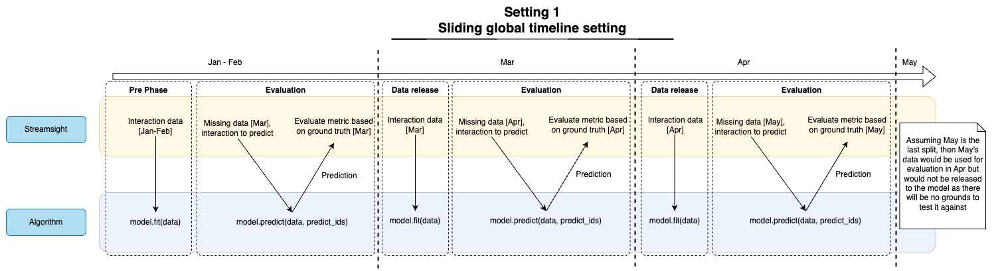

streamsightv2.evaluators.EvaluatorPipeline
- class streamsightv2.evaluators.EvaluatorPipeline(algorithm_entries: List[AlgorithmEntry], metric_entries: List[MetricEntry], setting: Setting, metric_k: int, ignore_unknown_user: bool = True, ignore_unknown_item: bool = True, seed: int | None = None)
Bases:
EvaluatorBaseEvaluation via pipeline
The diagram below shows the diagram of the pipeline evaluator for the sliding window setting. If the setting is a single time point setting, the evaluator will only run phase 1 and 2. This is the same as setting the sliding window setting to only having 1 split.
The pipeline is responsible for evaluating algorithms with metrics and evaluates the algorithms in 3 phases:
Pre-phase
Evaluation phase
Data release phase
In Setting 3 (single time point split), the evaluator will only run phase 1 and 2. In Setting 1 (sliding window setting), the evaluator will run all 3 phases, with phase 2 and 3 repeated for each window/split. This can be seen in the diagram above.
- Parameters:
algorithm_entries (List[AlgorithmEntry]) – List of algorithm entries
metric_entries (List[MetricEntry]) – List of metric entries
setting (Setting) – Setting object
metric_k (int) – Number of top interactions to consider
ignore_unknown_user (bool) – To ignore unknown users
ignore_unknown_item (bool) – To ignore unknown items
seed (Optional[int]) – Random seed for the evaluator
- __init__(algorithm_entries: List[AlgorithmEntry], metric_entries: List[MetricEntry], setting: Setting, metric_k: int, ignore_unknown_user: bool = True, ignore_unknown_item: bool = True, seed: int | None = None)
Methods
__init__(algorithm_entries, metric_entries, ...)Return the current step of the evaluator.
metric_results([level, ...])Results of the metrics computed.
Prepare evaluator for pickling.
restore()Restore the generators before pickling.
run()Run the evaluator across all steps and splits
run_step([reset])Run a single step of the evaluator.
run_steps(num_steps)Run multiple steps of the evaluator.
Attributes
Setting to evaluate the algorithms on.
Value of K for the metrics.
To ignore unknown users during evaluation.
To ignore unknown items during evaluation.
- _acc: MetricAccumulator
- _current_timestamp: int
- _data_release_step()
Data release phase. (Phase 3)
This method releases the data from the evaluator. This method should only be called when the setting is a sliding window setting.
The data is released by updating the known user/item base with the incremental data. After updating the known user/item base, the incremental data is masked to the known user/item base shape. The algorithms are then trained with the incremental data.
Note
Previously unknown user/item base is reset after the data release. Since these unknown user/item base should be within the incremental data released.
- _evaluate_step()
Evaluate performance of the algorithms. (Phase 2)
Summary
This method evaluates the performance of the algorithms with the metrics. It takes the unlabeled data, predicts the interaction, and evaluates the performance with the ground truth data.
Specifics
The evaluation is done by: 1. Get the next unlabeled data and ground truth data from the setting 2. Get the current timestamp from the setting 3. Update the unknown user/item base with the ground truth data 4. Mask the unlabeled data to the known user/item base shape 5. Mask the ground truth data based on the provided flags
ignore_unknown_userPredict the interaction with the algorithms
Check the shape of the prediction matrix
Store the results in the micro metric accumulator
Cache the results in the macro metric accumulator
Repeat step 6 for each algorithm
- raises EOWSetting:
If there is no more data to be processed
- _get_evaluation_data() Tuple[InteractionMatrix, InteractionMatrix, int]
Get the evaluation data for the current step.
Internal method to get the evaluation data for the current step. The evaluation data consists of the unlabeled data, ground truth data, and the current timestamp which will be returned as a tuple. The shapes are masked based through
user_item_base. The unknown users in the ground truth data are also updated inuser_item_base.Note
_current_timestampis updated with the current timestamp.- Returns:
Tuple of unlabeled data, ground truth data, and current timestamp
- Return type:
Tuple[csr_matrix, csr_matrix, int]
- Raises:
EOWSetting – If there is no more data to be processed
- _instantiate_algorithm()
Instantiate the algorithms from the algorithm entries.
This method instantiates the algorithms and stores them in
algorithm. Each time this method is called, the algorithms are re-instantiated.
- _prediction_shape_handler(X_true_shape: Tuple[int, int], X_pred: csr_matrix) csr_matrix
Handle shape difference of the prediction matrix.
If there is a difference in the shape of the prediction matrix and the ground truth matrix, this function will handle the difference based on
ignore_unknown_userandignore_unknown_item.- Parameters:
X_true_shape (Tuple[int,int]) – Shape of the ground truth matrix
X_pred (csr_matrix) – Prediction matrix
- Raises:
ValueError – If the user dimension of the prediction matrix is less than the ground truth matrix
- Returns:
Prediction matrix with the same shape as the ground truth matrix
- Return type:
csr_matrix
- _ready_algo()
Train the algorithms with the background data.
This method should be called after
_instantiate_algorithm(). The algorithms are trained with the background data, and the set of known user/item is updated.- Raises:
ValueError – If algorithm is not instantiated
- _ready_evaluator()
Pre-phase of the evaluator. (Phase 1)
Summary
This method prepares the evaluator for the evaluation process. It instantiates the algorithm, trains the algorithm with the background data, instantiates the metric accumulator, and prepares the data generators. The next phase of the evaluator is the evaluation phase (Phase 2).
Specifics
The evaluator is prepared by: 1. Instantiating the each algorithm from the algorithm entries 2. For each algorithm, train the algorithm with the background data from
Instantiate the metric accumulator for micro and macro metrics
Create an entry for each metric in the macro metric accumulator
Prepare the data generators for the setting
- current_step() int
Return the current step of the evaluator.
- Returns:
Current step of the evaluator
- Return type:
int
- ignore_unknown_item
To ignore unknown items during evaluation.
- ignore_unknown_user
To ignore unknown users during evaluation.
- metric_k
Value of K for the metrics.
- metric_results(level: MetricLevelEnum | Literal['macro', 'micro', 'window', 'user'] = MetricLevelEnum.MACRO, only_current_timestamp: bool | None = False, filter_timestamp: int | None = None, filter_algo: str | None = None) DataFrame
Results of the metrics computed.
Computes the metrics of all algorithms based on the level specified and return the results in a pandas DataFrame. The results can be filtered based on the algorithm name and the current timestamp.
Specifics
User level: User level metrics computed across all timestamps.
Window level: Window level metrics computed across all timestamps. This can be viewed as a macro level metric in the context of a single window, where the scores of each user is averaged within the window.
Macro level: Macro level metrics computed for entire timeline. This score is computed by averaging the scores of all windows, treating each window equally.
Micro level: Micro level metrics computed for entire timeline. This score is computed by averaging the scores of all users, treating each user and the timestamp the user is in as unique contribution to the overall score.
- param level:
Level of the metric to compute, defaults to “macro”
- type level:
Union[MetricLevelEnum, Literal[“macro”, “micro”, “window”, “user”]]
- param only_current_timestamp:
Filter only the current timestamp, defaults to False
- type only_current_timestamp:
bool, optional
- param filter_timestamp:
Timestamp value to filter on, defaults to None. If both only_current_timestamp and filter_timestamp are provided, filter_timestamp will be used.
- type filter_timestamp:
Optional[int], optional
- param filter_algo:
Algorithm name to filter on, defaults to None
- type filter_algo:
Optional[str], optional
- return:
Dataframe representation of the metric
- rtype:
pd.DataFrame
- prepare_dump() None
Prepare evaluator for pickling.
This method is used to prepare the evaluator for pickling. The method will destruct the generators to avoid pickling issues.
- restore() None
Restore the generators before pickling.
This method is used to restore the generators after loading the object from a pickle file.
- run()
Run the evaluator across all steps and splits
Runs all 3 phases across all splits (if there are multiple splits). This method should be called when the programmer wants to step through all phases and splits to arrive to the metrics computed. An alternative to running through all splits is to call
run_step()method which runs only one step at a time.
- run_step(reset=False)
Run a single step of the evaluator.
This method runs a single step of the evaluator. The evaluator is split into 3 phases. In the first run, all 3 phases are run. In the subsequent runs, only the evaluation and data release phase are run. The method will run all steps until the number of splits is reached. To rerun the evaluation again, call with reset=True.
- Parameters:
reset (bool, optional) – To reset the evaluation step , defaults to False
- run_steps(num_steps: int)
Run multiple steps of the evaluator.
Effectively runs
run_step()method :param:`num_steps` times. Call this method to run multiple steps of the evaluator at once.- Parameters:
num_steps (int) – Number of steps to run
- setting
Setting to evaluate the algorithms on.
{kind=link}